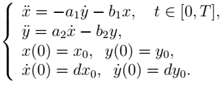

Это цветочные диффуры.

Здесь коэффициенты a1 и a2, а также b1 и b2 могут быть равны между собой, но не обязательно.
Цветок зависит от коэффициентов a1, a2, b1, b2, от начальных условий x0, y0, dx0, dy0, а также от длины временного промежутка T.
Примеры таких цветков вы можете посмотреть здесь.
В качестве коэффициентов вы можете вводить любые числа (в том числе дробные, через точку), например ваши памятные даты. Получится ваш индивидуальный цветок.
При разработке страницы использовались библиотеки Numeric Javascript и Flot.